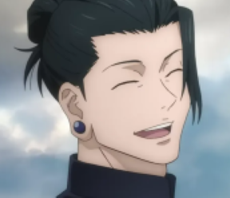
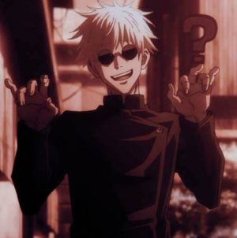
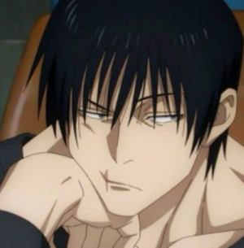

Em 2006, o aluno do terceiro ano Utahime Iori e a feiticeira Mei Mei são designados para investigar uma casa mal-assombrada da qual muitas
pessoas desapareceram. Ao inspecionar o interior, os dois percebem que estão presos em um corredor sem fim como resultado do espírito
amaldiçoado. Assim que estão prestes a planejar sua fuga, os alunos do segundo ano Satoru Gojo , Suguru Geto e Shoko Ieiri chegam, com os
dois primeiros facilmente descartando o prédio e a maldição. Devido a negligenciar abrir uma cortina, eles são repreendidos por seu
professor de sala de aula, Masamichi Yaga, na Jujutsu High. Depois que Gojo e Geto têm um desentendimento sobre o relacionamento entre
feiticeiros e não feiticeiros, eles são designados para um trabalho cortesia do Mestre Tengen. A cada 500 anos, para neutralizar sua
técnica amaldiçoada de Imortalidade para impedi-lo de evoluir além da de um humano, Tengen se funde com uma pessoa conhecida como "Star
Plasma Vessel". Gojo e Geto são contratados para proteger a embarcação, uma garota chamada Riko Amanai, que está sendo alvo de dois grupos:
a seita de usuários de maldições "Q" e o grupo religioso "Time Vessel Association". A caminho de Riko, Gojo e Geto são atacados por membros
de Q, com o último salvando Riko. Enquanto isso, por não ter força para lutar, a Time Vessel Association contrata alguém para matar Riko,
Toji Zen'in, agora usando o nome de solteira de sua esposa, Fushiguro.
Gojo e Geto facilmente eliminam os atacantes Q, e depois que ela acorda de sua inconsciência, são formalmente apresentados a Riko e sua
empregada Misato Kuroi. Apesar de pretender levá-la para Jujutsu High por segurança, Riko vai para a escola durante o dia, com Tengen ordenando
Gojo e Geto a seguir seus desejos, pois eles estão cientes de que, embora ela esteja contente com seu destino, ela não terá mais uma vida
normal quando for assimilada a Tengen. Enquanto isso, sabendo que não tem chance de enfrentar Gojo no momento, Toji decide esperar e deixar
que outros atacantes os cansem primeiro, adicionando mais combustível ao fogo ao colocar uma recompensa de 30 milhões de ienes pela cabeça
de Riko. Geto e Kuroi enfrentam usuários de maldição na escola, enquanto Gojo agarra Riko antes de ser encurralado por um usuário de
maldição capaz de criar clones de si mesmo. Usando o poder de seus Seis Olhos e Limitless, Gojo é capaz de subjugar e derrotar o usuário,
mesmo depois que ele falha em executar sua técnica de maldição reversa. Nesse momento, Riko recebe uma mensagem de texto de Kuroi amarrado
e capturado.
Após saberem do sequestro de Kuroi pela Associação de Naves Temporais, Gojo, Geto e Riko invadem sem esforço sua base em Okinawa para
resgatá-la e decidem passar o tempo esperando o prazo da recompensa saindo da ilha. Gojo os deixa ficar mais tempo para satisfazer os desejos
de Riko, embora Geto se preocupe, pois Gojo tem usado os Seis Olhos sem parar por dois dias seguidos. Assim que o prazo acaba, o grupo chega à
Tokyo Jujutsu High para se preparar para a assimilação, apenas para serem atacados de repente por Toji, pegando Gojo desprevenido. Gojo fica
para trás para lutar enquanto Geto leva Riko e Kuroi para Tengen's. Durante a batalha, Gojo percebe que Toji não tem nenhuma energia
amaldiçoada, ao contrário dos humanos normais, o que significa que ele nasceu com uma Restrição Celestial, concedendo-lhe uma incrível destrez
física. Usando uma horda de espíritos amaldiçoados que o acompanham, bem como uma ferramenta amaldiçoada de grau especial projetada para
desativar à força técnicas amaldiçoadas ativas, Toji é capaz de dominar Gojo e cortar violentamente sua garganta e peito, aparentemente
matando-o. Enquanto isso, Riko diz suas lágrimas de despedida para Kuroi enquanto Geto a leva para o covil subterrâneo de Tengen. Ele dá a
ela a opção de rejeitar a assimilação, tendo já decidido com Gojo ir contra Tengen se ela assim o desejar. Riko admite seu desejo de viver
sua vida como uma pessoa normal, mas quando ela está prestes a estender a mão para Geto, ela é repentinamente baleada fatalmente na cabeça
por Toji. Geto fica atordoado, e depois que Toji se gaba de ter matado Gojo, Geto libera seus espíritos amaldiçoados para lutar.
Clique aqui para saber o desfecho dessa história
  